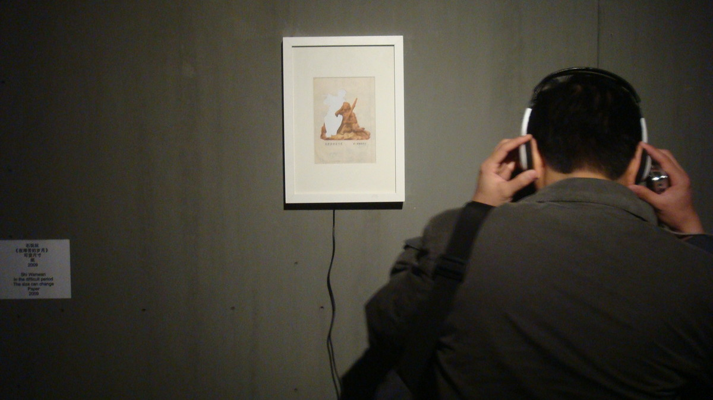
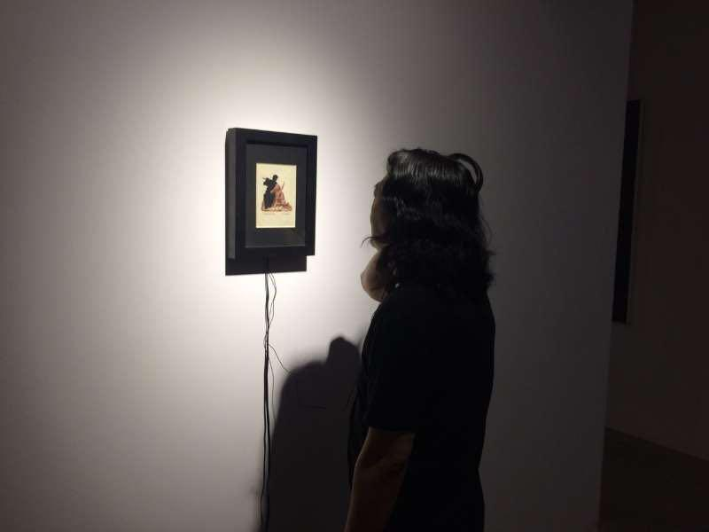
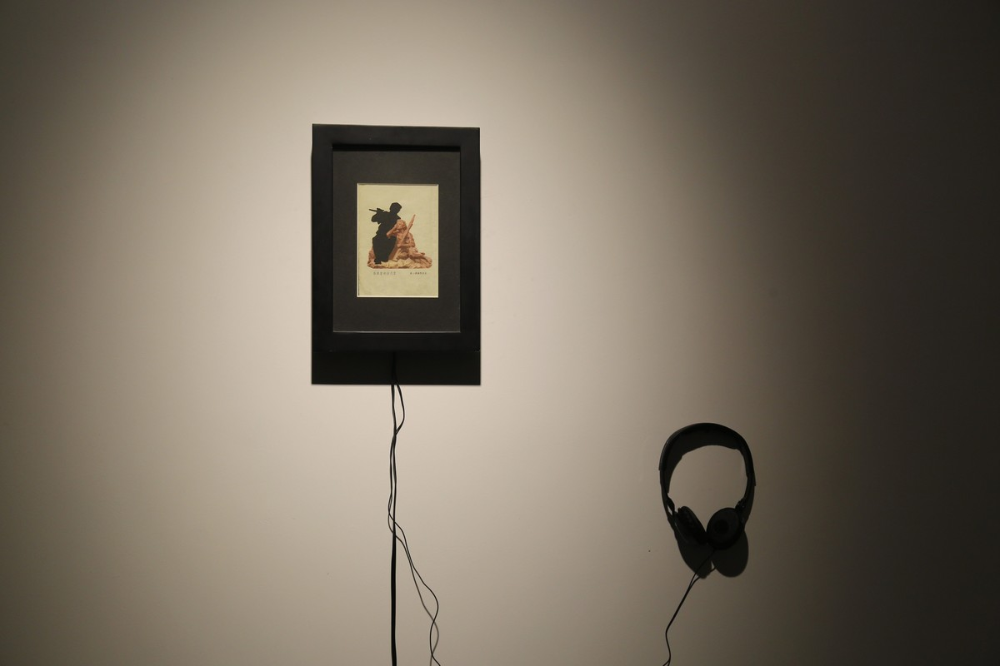

在艰苦的岁月里 | IN THOSE HARD YEARS

装置 ，纸为18x12.5cm、木框上油漆、录音播放器、耳机 声音为循环播放 ，2009
Installation, Mixed media, Picture&Sound, 18x12.5cm, Wooden frame, MP3 player, Earphone, 2009
找到小学语文课本里的看图说文《在艰苦的岁月里》的那一页，剪掉图片里的老人。在画面旁播放一个小男孩朗读课文里的关于老人形象描述的录音。
《在艰苦的岁月里》是根据雕塑家潘鹤作品虚构出来的故事，描述红军长征路途中小红军听老红军吹笛子，追忆艰苦岁月。本文曾被选入中国小学语文教材。
The page of the illustrated text called In Those Hard Years in a Chinese Literature book used in primary school was framed after the image of the old man was cut off. Beside the picture was played a piece of audio recorded by a boy, reading the paragraph in the text that describes the image of this old man.
The text was invented based on a sculpture made by Pan He, depicting a scene that one old red army soldier was playing the flute during the Long March while a young soldier sat close to him, listening to the music. It was selected into the Chinese Literature book used in primary school.

N9艺术中心，苏州
N9 Art Center, Suzhou

当代唐人艺术中心，北京
Tang Contemporary Art, Beijing